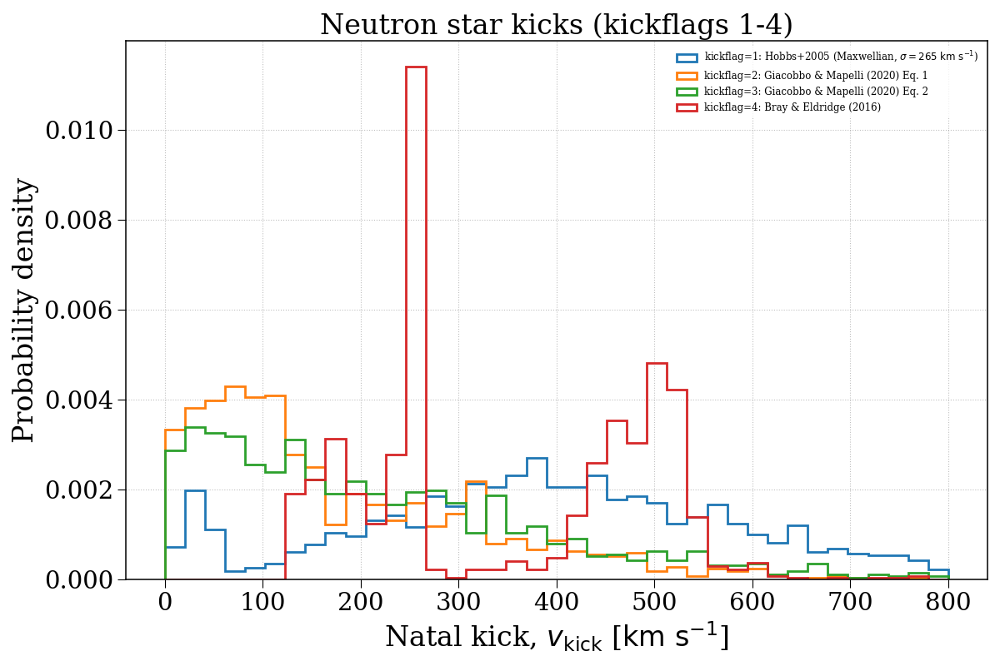
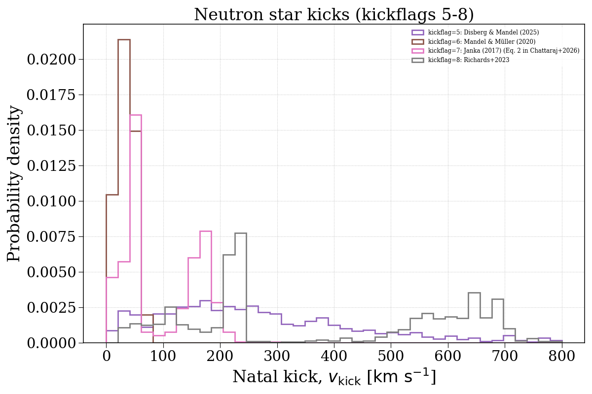
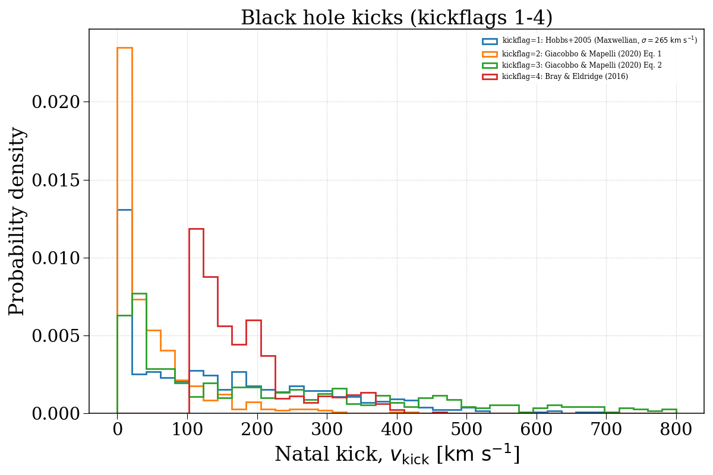
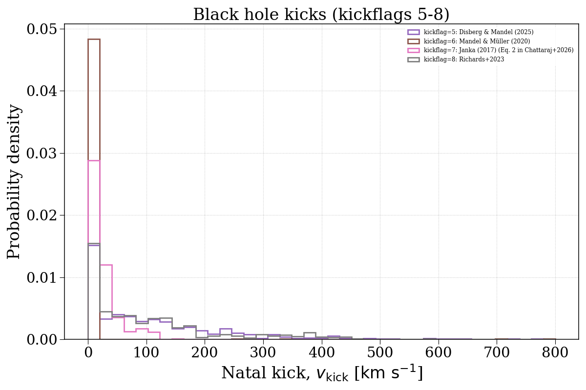

Note
Go to the end to download the full example code.
kickflag¶
This example demonstrates how changing the kickflag parameter can affect the natal kick velocity distributions of compact objects. We separate this into neutron stars and black holes.




Evolving population with kickflag = 1...
Evolving: 0%| | 0/2019 [00:00<?, ?sys/s]
Evolving: 2%|▏ | 42/2019 [00:00<00:04, 412.52sys/s]
Evolving: 4%|▍ | 84/2019 [00:00<00:08, 229.75sys/s]
Evolving: 6%|▌ | 112/2019 [00:00<00:10, 174.28sys/s]
Evolving: 7%|▋ | 149/2019 [00:00<00:08, 219.67sys/s]
Evolving: 9%|▊ | 176/2019 [00:00<00:08, 213.86sys/s]
Evolving: 10%|▉ | 201/2019 [00:01<00:11, 161.38sys/s]
Evolving: 12%|█▏ | 244/2019 [00:01<00:08, 216.40sys/s]
Evolving: 13%|█▎ | 271/2019 [00:01<00:08, 204.83sys/s]
Evolving: 15%|█▍ | 296/2019 [00:01<00:10, 165.07sys/s]
Evolving: 16%|█▌ | 321/2019 [00:01<00:09, 181.17sys/s]
Evolving: 17%|█▋ | 343/2019 [00:01<00:08, 188.87sys/s]
Evolving: 18%|█▊ | 365/2019 [00:01<00:08, 190.35sys/s]
Evolving: 19%|█▉ | 386/2019 [00:02<00:09, 164.63sys/s]
Evolving: 20%|██ | 413/2019 [00:02<00:08, 182.22sys/s]
Evolving: 21%|██▏ | 433/2019 [00:02<00:09, 160.42sys/s]
Evolving: 23%|██▎ | 455/2019 [00:02<00:09, 158.69sys/s]
Evolving: 24%|██▍ | 492/2019 [00:02<00:09, 164.56sys/s]
Evolving: 26%|██▋ | 533/2019 [00:02<00:07, 210.84sys/s]
Evolving: 28%|██▊ | 557/2019 [00:03<00:08, 166.47sys/s]
Evolving: 29%|██▊ | 579/2019 [00:03<00:09, 155.39sys/s]
Evolving: 30%|███ | 615/2019 [00:03<00:08, 170.01sys/s]
Evolving: 32%|███▏ | 643/2019 [00:03<00:08, 168.71sys/s]
Evolving: 34%|███▎ | 680/2019 [00:03<00:06, 207.11sys/s]
Evolving: 35%|███▍ | 704/2019 [00:03<00:07, 183.16sys/s]
Evolving: 36%|███▌ | 725/2019 [00:03<00:07, 178.73sys/s]
Evolving: 37%|███▋ | 753/2019 [00:04<00:06, 200.62sys/s]
Evolving: 38%|███▊ | 775/2019 [00:04<00:06, 201.93sys/s]
Evolving: 39%|███▉ | 797/2019 [00:04<00:06, 203.06sys/s]
Evolving: 41%|████ | 819/2019 [00:04<00:06, 187.53sys/s]
Evolving: 42%|████▏ | 839/2019 [00:04<00:06, 183.45sys/s]
Evolving: 42%|████▏ | 858/2019 [00:04<00:06, 182.72sys/s]
Evolving: 44%|████▎ | 880/2019 [00:04<00:05, 192.41sys/s]
Evolving: 45%|████▍ | 902/2019 [00:04<00:05, 193.10sys/s]
Evolving: 46%|████▌ | 924/2019 [00:04<00:05, 200.14sys/s]
Evolving: 47%|████▋ | 945/2019 [00:05<00:05, 199.99sys/s]
Evolving: 48%|████▊ | 966/2019 [00:05<00:06, 152.18sys/s]
Evolving: 49%|████▉ | 986/2019 [00:05<00:06, 152.36sys/s]
Evolving: 51%|█████ | 1022/2019 [00:05<00:04, 200.81sys/s]
Evolving: 52%|█████▏ | 1045/2019 [00:05<00:04, 203.54sys/s]
Evolving: 53%|█████▎ | 1067/2019 [00:05<00:04, 203.79sys/s]
Evolving: 54%|█████▍ | 1089/2019 [00:05<00:04, 192.43sys/s]
Evolving: 55%|█████▍ | 1110/2019 [00:05<00:04, 193.77sys/s]
Evolving: 56%|█████▌ | 1133/2019 [00:06<00:04, 196.35sys/s]
Evolving: 57%|█████▋ | 1154/2019 [00:06<00:04, 182.30sys/s]
Evolving: 58%|█████▊ | 1174/2019 [00:06<00:05, 153.53sys/s]
Evolving: 60%|██████ | 1213/2019 [00:06<00:03, 204.74sys/s]
Evolving: 61%|██████▏ | 1238/2019 [00:06<00:03, 208.67sys/s]
Evolving: 62%|██████▏ | 1261/2019 [00:06<00:03, 198.49sys/s]
Evolving: 64%|██████▎ | 1283/2019 [00:06<00:03, 200.91sys/s]
Evolving: 65%|██████▍ | 1304/2019 [00:07<00:05, 142.80sys/s]
Evolving: 66%|██████▌ | 1335/2019 [00:07<00:04, 151.09sys/s]
Evolving: 67%|██████▋ | 1356/2019 [00:07<00:04, 153.01sys/s]
Evolving: 69%|██████▉ | 1393/2019 [00:07<00:03, 198.58sys/s]
Evolving: 70%|███████ | 1416/2019 [00:07<00:02, 204.34sys/s]
Evolving: 71%|███████▏ | 1439/2019 [00:07<00:03, 175.42sys/s]
Evolving: 72%|███████▏ | 1459/2019 [00:07<00:03, 179.87sys/s]
Evolving: 73%|███████▎ | 1479/2019 [00:08<00:03, 178.68sys/s]
Evolving: 74%|███████▍ | 1500/2019 [00:08<00:02, 185.91sys/s]
Evolving: 75%|███████▌ | 1520/2019 [00:08<00:03, 161.97sys/s]
Evolving: 76%|███████▌ | 1538/2019 [00:08<00:03, 135.77sys/s]
Evolving: 78%|███████▊ | 1569/2019 [00:08<00:02, 171.80sys/s]
Evolving: 79%|███████▊ | 1589/2019 [00:08<00:02, 170.05sys/s]
Evolving: 80%|███████▉ | 1609/2019 [00:08<00:02, 175.97sys/s]
Evolving: 81%|████████ | 1631/2019 [00:08<00:02, 185.97sys/s]
Evolving: 82%|████████▏ | 1651/2019 [00:09<00:01, 187.89sys/s]
Evolving: 83%|████████▎ | 1673/2019 [00:09<00:01, 195.51sys/s]
Evolving: 84%|████████▍ | 1694/2019 [00:09<00:02, 162.24sys/s]
Evolving: 85%|████████▍ | 1712/2019 [00:09<00:01, 164.19sys/s]
Evolving: 86%|████████▌ | 1730/2019 [00:09<00:02, 131.42sys/s]
Evolving: 87%|████████▋ | 1761/2019 [00:09<00:01, 165.70sys/s]
Evolving: 88%|████████▊ | 1780/2019 [00:09<00:01, 163.31sys/s]
Evolving: 89%|████████▉ | 1798/2019 [00:10<00:01, 133.92sys/s]
Evolving: 91%|█████████ | 1828/2019 [00:10<00:01, 167.60sys/s]
Evolving: 92%|█████████▏| 1849/2019 [00:10<00:01, 155.17sys/s]
Evolving: 92%|█████████▏| 1867/2019 [00:10<00:01, 144.11sys/s]
Evolving: 94%|█████████▍| 1906/2019 [00:10<00:00, 198.09sys/s]
Evolving: 96%|█████████▌| 1929/2019 [00:10<00:00, 187.52sys/s]
Evolving: 97%|█████████▋| 1955/2019 [00:10<00:00, 203.16sys/s]
Evolving: 98%|█████████▊| 1977/2019 [00:10<00:00, 207.30sys/s]
Evolving: 99%|█████████▉| 1999/2019 [00:11<00:00, 209.68sys/s]
Evolving: 100%|██████████| 2019/2019 [00:11<00:00, 181.68sys/s]
[Time taken: 11.4133 seconds]
Evolving population with kickflag = 2...
Evolving: 0%| | 0/2019 [00:00<?, ?sys/s]
Evolving: 0%| | 3/2019 [00:00<01:44, 19.31sys/s]
Evolving: 2%|▏ | 40/2019 [00:00<00:10, 186.19sys/s]
Evolving: 3%|▎ | 63/2019 [00:00<00:11, 166.22sys/s]
Evolving: 4%|▍ | 84/2019 [00:00<00:11, 174.78sys/s]
Evolving: 5%|▌ | 106/2019 [00:00<00:10, 183.82sys/s]
Evolving: 6%|▌ | 126/2019 [00:00<00:10, 178.88sys/s]
Evolving: 7%|▋ | 151/2019 [00:00<00:10, 179.57sys/s]
Evolving: 9%|▉ | 178/2019 [00:00<00:09, 200.68sys/s]
Evolving: 10%|▉ | 199/2019 [00:01<00:09, 192.15sys/s]
Evolving: 11%|█ | 219/2019 [00:01<00:09, 184.63sys/s]
Evolving: 12%|█▏ | 244/2019 [00:01<00:08, 198.69sys/s]
Evolving: 13%|█▎ | 265/2019 [00:01<00:08, 197.03sys/s]
Evolving: 14%|█▍ | 285/2019 [00:01<00:09, 187.85sys/s]
Evolving: 15%|█▌ | 304/2019 [00:01<00:10, 169.51sys/s]
Evolving: 16%|█▌ | 322/2019 [00:01<00:10, 167.42sys/s]
Evolving: 17%|█▋ | 339/2019 [00:01<00:10, 166.40sys/s]
Evolving: 18%|█▊ | 363/2019 [00:02<00:09, 175.63sys/s]
Evolving: 19%|█▉ | 381/2019 [00:02<00:10, 153.78sys/s]
Evolving: 20%|██ | 413/2019 [00:02<00:08, 187.25sys/s]
Evolving: 21%|██▏ | 433/2019 [00:02<00:09, 163.70sys/s]
Evolving: 23%|██▎ | 455/2019 [00:02<00:10, 156.14sys/s]
Evolving: 24%|██▍ | 492/2019 [00:02<00:09, 162.50sys/s]
Evolving: 26%|██▋ | 530/2019 [00:02<00:07, 207.19sys/s]
Evolving: 27%|██▋ | 553/2019 [00:03<00:07, 201.42sys/s]
Evolving: 28%|██▊ | 575/2019 [00:03<00:07, 181.97sys/s]
Evolving: 29%|██▉ | 595/2019 [00:03<00:07, 180.25sys/s]
Evolving: 30%|███ | 615/2019 [00:03<00:09, 151.80sys/s]
Evolving: 32%|███▏ | 643/2019 [00:03<00:08, 154.08sys/s]
Evolving: 34%|███▎ | 681/2019 [00:03<00:06, 200.95sys/s]
Evolving: 35%|███▍ | 704/2019 [00:04<00:07, 172.82sys/s]
Evolving: 36%|███▌ | 725/2019 [00:04<00:07, 174.73sys/s]
Evolving: 37%|███▋ | 752/2019 [00:04<00:06, 193.65sys/s]
Evolving: 38%|███▊ | 776/2019 [00:04<00:06, 202.32sys/s]
Evolving: 40%|███▉ | 798/2019 [00:04<00:05, 204.49sys/s]
Evolving: 41%|████ | 820/2019 [00:04<00:06, 186.63sys/s]
Evolving: 42%|████▏ | 840/2019 [00:04<00:06, 184.01sys/s]
Evolving: 43%|████▎ | 859/2019 [00:04<00:06, 181.05sys/s]
Evolving: 44%|████▎ | 883/2019 [00:04<00:05, 194.42sys/s]
Evolving: 45%|████▍ | 904/2019 [00:05<00:05, 194.14sys/s]
Evolving: 46%|████▌ | 924/2019 [00:05<00:05, 195.02sys/s]
Evolving: 47%|████▋ | 947/2019 [00:05<00:05, 200.25sys/s]
Evolving: 48%|████▊ | 968/2019 [00:05<00:06, 159.93sys/s]
Evolving: 49%|████▉ | 986/2019 [00:05<00:07, 147.52sys/s]
Evolving: 51%|█████ | 1024/2019 [00:05<00:04, 200.89sys/s]
Evolving: 52%|█████▏ | 1047/2019 [00:05<00:04, 201.00sys/s]
Evolving: 53%|█████▎ | 1069/2019 [00:05<00:04, 201.03sys/s]
Evolving: 54%|█████▍ | 1091/2019 [00:06<00:05, 185.22sys/s]
Evolving: 55%|█████▌ | 1114/2019 [00:06<00:04, 194.31sys/s]
Evolving: 56%|█████▋ | 1137/2019 [00:06<00:04, 185.48sys/s]
Evolving: 58%|█████▊ | 1162/2019 [00:06<00:04, 198.80sys/s]
Evolving: 59%|█████▊ | 1183/2019 [00:06<00:04, 168.19sys/s]
Evolving: 60%|██████ | 1214/2019 [00:06<00:04, 198.36sys/s]
Evolving: 61%|██████▏ | 1237/2019 [00:06<00:03, 205.42sys/s]
Evolving: 62%|██████▏ | 1259/2019 [00:06<00:03, 193.25sys/s]
Evolving: 63%|██████▎ | 1282/2019 [00:07<00:03, 197.64sys/s]
Evolving: 65%|██████▍ | 1303/2019 [00:07<00:03, 186.50sys/s]
Evolving: 66%|██████▌ | 1323/2019 [00:07<00:03, 180.60sys/s]
Evolving: 66%|██████▋ | 1342/2019 [00:07<00:04, 151.21sys/s]
Evolving: 67%|██████▋ | 1359/2019 [00:07<00:04, 135.62sys/s]
Evolving: 69%|██████▉ | 1395/2019 [00:07<00:03, 185.65sys/s]
Evolving: 70%|███████ | 1417/2019 [00:07<00:03, 193.94sys/s]
Evolving: 71%|███████▏ | 1439/2019 [00:07<00:03, 170.98sys/s]
Evolving: 72%|███████▏ | 1460/2019 [00:08<00:03, 176.98sys/s]
Evolving: 73%|███████▎ | 1480/2019 [00:08<00:02, 182.55sys/s]
Evolving: 74%|███████▍ | 1501/2019 [00:08<00:02, 185.94sys/s]
Evolving: 75%|███████▌ | 1521/2019 [00:08<00:03, 163.48sys/s]
Evolving: 76%|███████▌ | 1539/2019 [00:08<00:03, 136.95sys/s]
Evolving: 78%|███████▊ | 1569/2019 [00:08<00:02, 172.71sys/s]
Evolving: 79%|███████▊ | 1589/2019 [00:08<00:02, 169.26sys/s]
Evolving: 80%|███████▉ | 1609/2019 [00:08<00:02, 174.66sys/s]
Evolving: 81%|████████ | 1630/2019 [00:09<00:02, 181.75sys/s]
Evolving: 82%|████████▏ | 1649/2019 [00:09<00:02, 181.32sys/s]
Evolving: 83%|████████▎ | 1674/2019 [00:09<00:01, 191.56sys/s]
Evolving: 84%|████████▍ | 1694/2019 [00:09<00:01, 172.31sys/s]
Evolving: 85%|████████▍ | 1712/2019 [00:09<00:01, 159.55sys/s]
Evolving: 86%|████████▌ | 1729/2019 [00:09<00:02, 127.49sys/s]
Evolving: 87%|████████▋ | 1762/2019 [00:09<00:01, 169.51sys/s]
Evolving: 88%|████████▊ | 1782/2019 [00:10<00:01, 170.28sys/s]
Evolving: 89%|████████▉ | 1801/2019 [00:10<00:01, 140.58sys/s]
Evolving: 91%|█████████ | 1828/2019 [00:10<00:01, 162.10sys/s]
Evolving: 92%|█████████▏| 1849/2019 [00:10<00:01, 149.46sys/s]
Evolving: 92%|█████████▏| 1866/2019 [00:10<00:01, 145.29sys/s]
Evolving: 94%|█████████▍| 1902/2019 [00:10<00:00, 194.27sys/s]
Evolving: 95%|█████████▌| 1924/2019 [00:10<00:00, 198.74sys/s]
Evolving: 96%|█████████▋| 1946/2019 [00:10<00:00, 196.63sys/s]
Evolving: 97%|█████████▋| 1968/2019 [00:11<00:00, 197.60sys/s]
Evolving: 99%|█████████▊| 1991/2019 [00:11<00:00, 204.86sys/s]
Evolving: 100%|█████████▉| 2015/2019 [00:11<00:00, 207.39sys/s]
Evolving: 100%|██████████| 2019/2019 [00:11<00:00, 178.93sys/s]
[Time taken: 11.4153 seconds]
Evolving population with kickflag = 3...
Evolving: 0%| | 0/2019 [00:00<?, ?sys/s]
Evolving: 0%| | 3/2019 [00:00<01:41, 19.88sys/s]
Evolving: 2%|▏ | 40/2019 [00:00<00:10, 189.16sys/s]
Evolving: 3%|▎ | 63/2019 [00:00<00:11, 177.14sys/s]
Evolving: 4%|▍ | 84/2019 [00:00<00:10, 184.59sys/s]
Evolving: 5%|▌ | 106/2019 [00:00<00:10, 178.16sys/s]
Evolving: 6%|▌ | 125/2019 [00:00<00:10, 176.97sys/s]
Evolving: 7%|▋ | 149/2019 [00:00<00:09, 193.39sys/s]
Evolving: 8%|▊ | 169/2019 [00:00<00:09, 194.96sys/s]
Evolving: 9%|▉ | 190/2019 [00:01<00:09, 198.94sys/s]
Evolving: 10%|█ | 211/2019 [00:01<00:11, 154.16sys/s]
Evolving: 12%|█▏ | 248/2019 [00:01<00:08, 203.29sys/s]
Evolving: 13%|█▎ | 271/2019 [00:01<00:09, 187.63sys/s]
Evolving: 14%|█▍ | 292/2019 [00:01<00:11, 156.32sys/s]
Evolving: 16%|█▌ | 321/2019 [00:01<00:09, 177.62sys/s]
Evolving: 17%|█▋ | 341/2019 [00:01<00:09, 178.48sys/s]
Evolving: 18%|█▊ | 365/2019 [00:02<00:08, 191.41sys/s]
Evolving: 19%|█▉ | 386/2019 [00:02<00:10, 160.86sys/s]
Evolving: 20%|██ | 413/2019 [00:02<00:08, 185.88sys/s]
Evolving: 21%|██▏ | 434/2019 [00:02<00:09, 162.06sys/s]
Evolving: 23%|██▎ | 455/2019 [00:02<00:10, 152.48sys/s]
Evolving: 24%|██▍ | 492/2019 [00:02<00:09, 162.14sys/s]
Evolving: 26%|██▋ | 531/2019 [00:02<00:07, 207.98sys/s]
Evolving: 27%|██▋ | 555/2019 [00:03<00:06, 210.70sys/s]
Evolving: 29%|██▊ | 578/2019 [00:03<00:07, 191.52sys/s]
Evolving: 30%|██▉ | 599/2019 [00:03<00:08, 176.03sys/s]
Evolving: 31%|███ | 618/2019 [00:03<00:09, 154.71sys/s]
Evolving: 32%|███▏ | 643/2019 [00:03<00:09, 151.17sys/s]
Evolving: 34%|███▎ | 679/2019 [00:03<00:06, 193.55sys/s]
Evolving: 35%|███▍ | 701/2019 [00:03<00:07, 169.08sys/s]
Evolving: 36%|███▌ | 722/2019 [00:04<00:07, 176.19sys/s]
Evolving: 37%|███▋ | 747/2019 [00:04<00:06, 192.65sys/s]
Evolving: 38%|███▊ | 770/2019 [00:04<00:06, 198.08sys/s]
Evolving: 39%|███▉ | 791/2019 [00:04<00:06, 197.15sys/s]
Evolving: 40%|████ | 812/2019 [00:04<00:06, 172.79sys/s]
Evolving: 41%|████ | 832/2019 [00:04<00:06, 178.40sys/s]
Evolving: 42%|████▏ | 853/2019 [00:04<00:06, 178.94sys/s]
Evolving: 44%|████▎ | 881/2019 [00:04<00:05, 201.32sys/s]
Evolving: 45%|████▍ | 905/2019 [00:05<00:05, 200.46sys/s]
Evolving: 46%|████▌ | 928/2019 [00:05<00:05, 204.43sys/s]
Evolving: 47%|████▋ | 951/2019 [00:05<00:05, 196.14sys/s]
Evolving: 48%|████▊ | 971/2019 [00:05<00:06, 171.48sys/s]
Evolving: 49%|████▉ | 989/2019 [00:05<00:06, 152.94sys/s]
Evolving: 51%|█████ | 1026/2019 [00:05<00:05, 197.83sys/s]
Evolving: 52%|█████▏ | 1048/2019 [00:05<00:05, 190.96sys/s]
Evolving: 53%|█████▎ | 1071/2019 [00:05<00:05, 171.76sys/s]
Evolving: 54%|█████▍ | 1099/2019 [00:06<00:04, 189.81sys/s]
Evolving: 56%|█████▌ | 1129/2019 [00:06<00:04, 213.53sys/s]
Evolving: 57%|█████▋ | 1152/2019 [00:06<00:04, 208.52sys/s]
Evolving: 58%|█████▊ | 1174/2019 [00:06<00:05, 156.04sys/s]
Evolving: 60%|██████ | 1215/2019 [00:06<00:03, 210.42sys/s]
Evolving: 61%|██████▏ | 1240/2019 [00:06<00:03, 198.76sys/s]
Evolving: 63%|██████▎ | 1263/2019 [00:06<00:03, 204.82sys/s]
Evolving: 64%|██████▎ | 1286/2019 [00:07<00:04, 164.91sys/s]
Evolving: 65%|██████▍ | 1305/2019 [00:07<00:04, 160.85sys/s]
Evolving: 66%|██████▌ | 1335/2019 [00:07<00:04, 163.55sys/s]
Evolving: 67%|██████▋ | 1353/2019 [00:07<00:04, 164.56sys/s]
Evolving: 68%|██████▊ | 1381/2019 [00:07<00:03, 190.86sys/s]
Evolving: 70%|██████▉ | 1405/2019 [00:07<00:03, 201.69sys/s]
Evolving: 71%|███████ | 1427/2019 [00:07<00:03, 161.49sys/s]
Evolving: 72%|███████▏ | 1452/2019 [00:08<00:03, 175.49sys/s]
Evolving: 73%|███████▎ | 1477/2019 [00:08<00:02, 191.36sys/s]
Evolving: 74%|███████▍ | 1501/2019 [00:08<00:02, 197.70sys/s]
Evolving: 75%|███████▌ | 1522/2019 [00:08<00:02, 172.44sys/s]
Evolving: 76%|███████▋ | 1541/2019 [00:08<00:03, 144.26sys/s]
Evolving: 78%|███████▊ | 1569/2019 [00:08<00:02, 173.21sys/s]
Evolving: 79%|███████▊ | 1589/2019 [00:08<00:02, 172.62sys/s]
Evolving: 80%|███████▉ | 1608/2019 [00:08<00:02, 175.59sys/s]
Evolving: 81%|████████ | 1629/2019 [00:09<00:02, 182.92sys/s]
Evolving: 82%|████████▏ | 1649/2019 [00:09<00:02, 179.02sys/s]
Evolving: 83%|████████▎ | 1674/2019 [00:09<00:01, 180.11sys/s]
Evolving: 84%|████████▍ | 1693/2019 [00:09<00:01, 172.89sys/s]
Evolving: 85%|████████▍ | 1711/2019 [00:09<00:01, 162.91sys/s]
Evolving: 86%|████████▌ | 1728/2019 [00:09<00:02, 131.29sys/s]
Evolving: 87%|████████▋ | 1755/2019 [00:09<00:01, 160.26sys/s]
Evolving: 88%|████████▊ | 1773/2019 [00:09<00:01, 158.46sys/s]
Evolving: 89%|████████▉ | 1797/2019 [00:10<00:01, 135.87sys/s]
Evolving: 91%|█████████ | 1828/2019 [00:10<00:01, 167.87sys/s]
Evolving: 92%|█████████▏| 1849/2019 [00:10<00:01, 155.34sys/s]
Evolving: 92%|█████████▏| 1866/2019 [00:10<00:01, 148.94sys/s]
Evolving: 94%|█████████▍| 1904/2019 [00:10<00:00, 198.41sys/s]
Evolving: 95%|█████████▌| 1926/2019 [00:10<00:00, 201.04sys/s]
Evolving: 96%|█████████▋| 1948/2019 [00:10<00:00, 194.76sys/s]
Evolving: 98%|█████████▊| 1971/2019 [00:11<00:00, 201.85sys/s]
Evolving: 99%|█████████▊| 1992/2019 [00:11<00:00, 202.42sys/s]
Evolving: 100%|█████████▉| 2017/2019 [00:11<00:00, 212.72sys/s]
Evolving: 100%|██████████| 2019/2019 [00:11<00:00, 179.07sys/s]
[Time taken: 11.4090 seconds]
Evolving population with kickflag = 4...
Evolving: 0%| | 0/2019 [00:00<?, ?sys/s]
Evolving: 0%| | 3/2019 [00:00<01:54, 17.57sys/s]
Evolving: 2%|▏ | 46/2019 [00:00<00:10, 193.76sys/s]
Evolving: 3%|▎ | 70/2019 [00:00<00:10, 190.27sys/s]
Evolving: 5%|▍ | 93/2019 [00:00<00:10, 179.33sys/s]
Evolving: 6%|▌ | 113/2019 [00:00<00:12, 152.81sys/s]
Evolving: 7%|▋ | 148/2019 [00:00<00:09, 202.29sys/s]
Evolving: 8%|▊ | 171/2019 [00:00<00:09, 201.52sys/s]
Evolving: 10%|▉ | 195/2019 [00:01<00:08, 209.20sys/s]
Evolving: 11%|█ | 218/2019 [00:01<00:10, 174.89sys/s]
Evolving: 12%|█▏ | 248/2019 [00:01<00:08, 201.33sys/s]
Evolving: 13%|█▎ | 270/2019 [00:01<00:09, 192.04sys/s]
Evolving: 14%|█▍ | 291/2019 [00:01<00:10, 163.11sys/s]
Evolving: 16%|█▌ | 321/2019 [00:01<00:09, 182.28sys/s]
Evolving: 17%|█▋ | 341/2019 [00:01<00:09, 184.14sys/s]
Evolving: 18%|█▊ | 365/2019 [00:01<00:08, 195.68sys/s]
Evolving: 19%|█▉ | 386/2019 [00:02<00:09, 167.13sys/s]
Evolving: 20%|██ | 413/2019 [00:02<00:08, 185.22sys/s]
Evolving: 21%|██▏ | 433/2019 [00:02<00:09, 169.73sys/s]
Evolving: 23%|██▎ | 455/2019 [00:02<00:10, 155.13sys/s]
Evolving: 24%|██▍ | 492/2019 [00:02<00:09, 159.78sys/s]
Evolving: 26%|██▋ | 535/2019 [00:02<00:07, 208.55sys/s]
Evolving: 28%|██▊ | 558/2019 [00:03<00:09, 159.40sys/s]
Evolving: 29%|██▊ | 579/2019 [00:03<00:08, 163.07sys/s]
Evolving: 30%|███ | 615/2019 [00:03<00:08, 174.77sys/s]
Evolving: 32%|███▏ | 643/2019 [00:03<00:08, 163.53sys/s]
Evolving: 34%|███▍ | 683/2019 [00:03<00:06, 201.97sys/s]
Evolving: 35%|███▍ | 706/2019 [00:03<00:07, 183.25sys/s]
Evolving: 36%|███▌ | 726/2019 [00:04<00:07, 177.84sys/s]
Evolving: 37%|███▋ | 755/2019 [00:04<00:06, 200.49sys/s]
Evolving: 39%|███▊ | 778/2019 [00:04<00:06, 205.40sys/s]
Evolving: 40%|███▉ | 800/2019 [00:04<00:05, 207.20sys/s]
Evolving: 41%|████ | 822/2019 [00:04<00:06, 179.54sys/s]
Evolving: 42%|████▏ | 842/2019 [00:04<00:06, 179.14sys/s]
Evolving: 43%|████▎ | 865/2019 [00:04<00:06, 182.65sys/s]
Evolving: 44%|████▍ | 890/2019 [00:04<00:05, 197.47sys/s]
Evolving: 45%|████▌ | 912/2019 [00:05<00:05, 197.70sys/s]
Evolving: 46%|████▌ | 933/2019 [00:05<00:05, 199.82sys/s]
Evolving: 47%|████▋ | 954/2019 [00:05<00:06, 157.79sys/s]
Evolving: 49%|████▉ | 986/2019 [00:05<00:06, 156.61sys/s]
Evolving: 51%|█████ | 1024/2019 [00:05<00:04, 202.54sys/s]
Evolving: 52%|█████▏ | 1047/2019 [00:05<00:04, 203.19sys/s]
Evolving: 53%|█████▎ | 1070/2019 [00:05<00:04, 203.65sys/s]
Evolving: 54%|█████▍ | 1092/2019 [00:05<00:04, 190.12sys/s]
Evolving: 55%|█████▌ | 1115/2019 [00:06<00:04, 194.62sys/s]
Evolving: 56%|█████▋ | 1137/2019 [00:06<00:04, 188.22sys/s]
Evolving: 57%|█████▋ | 1157/2019 [00:06<00:04, 191.18sys/s]
Evolving: 58%|█████▊ | 1177/2019 [00:06<00:05, 157.78sys/s]
Evolving: 60%|██████ | 1214/2019 [00:06<00:03, 204.69sys/s]
Evolving: 61%|██████▏ | 1237/2019 [00:06<00:03, 209.52sys/s]
Evolving: 62%|██████▏ | 1260/2019 [00:06<00:03, 198.62sys/s]
Evolving: 63%|██████▎ | 1281/2019 [00:06<00:03, 199.34sys/s]
Evolving: 64%|██████▍ | 1302/2019 [00:07<00:03, 181.74sys/s]
Evolving: 65%|██████▌ | 1321/2019 [00:07<00:03, 177.78sys/s]
Evolving: 66%|██████▋ | 1340/2019 [00:07<00:04, 148.19sys/s]
Evolving: 67%|██████▋ | 1356/2019 [00:07<00:04, 134.84sys/s]
Evolving: 69%|██████▉ | 1391/2019 [00:07<00:03, 183.85sys/s]
Evolving: 70%|██████▉ | 1413/2019 [00:07<00:03, 192.31sys/s]
Evolving: 71%|███████ | 1434/2019 [00:07<00:03, 169.84sys/s]
Evolving: 72%|███████▏ | 1453/2019 [00:08<00:03, 168.10sys/s]
Evolving: 73%|███████▎ | 1476/2019 [00:08<00:03, 180.20sys/s]
Evolving: 74%|███████▍ | 1495/2019 [00:08<00:02, 176.43sys/s]
Evolving: 75%|███████▍ | 1514/2019 [00:08<00:03, 160.21sys/s]
Evolving: 76%|███████▌ | 1532/2019 [00:08<00:03, 126.03sys/s]
Evolving: 78%|███████▊ | 1571/2019 [00:08<00:02, 178.66sys/s]
Evolving: 79%|███████▉ | 1592/2019 [00:08<00:02, 178.37sys/s]
Evolving: 80%|███████▉ | 1612/2019 [00:08<00:02, 181.47sys/s]
Evolving: 81%|████████ | 1633/2019 [00:09<00:02, 188.66sys/s]
Evolving: 82%|████████▏ | 1653/2019 [00:09<00:01, 189.25sys/s]
Evolving: 83%|████████▎ | 1675/2019 [00:09<00:01, 191.37sys/s]
Evolving: 84%|████████▍ | 1695/2019 [00:09<00:01, 173.35sys/s]
Evolving: 85%|████████▍ | 1713/2019 [00:09<00:02, 147.30sys/s]
Evolving: 86%|████████▌ | 1729/2019 [00:09<00:02, 133.55sys/s]
Evolving: 87%|████████▋ | 1759/2019 [00:09<00:01, 169.19sys/s]
Evolving: 88%|████████▊ | 1778/2019 [00:09<00:01, 169.39sys/s]
Evolving: 89%|████████▉ | 1797/2019 [00:10<00:01, 135.93sys/s]
Evolving: 91%|█████████ | 1828/2019 [00:10<00:01, 169.61sys/s]
Evolving: 92%|█████████▏| 1849/2019 [00:10<00:01, 149.14sys/s]
Evolving: 92%|█████████▏| 1866/2019 [00:10<00:01, 140.61sys/s]
Evolving: 94%|█████████▍| 1906/2019 [00:10<00:00, 192.17sys/s]
Evolving: 95%|█████████▌| 1928/2019 [00:10<00:00, 186.49sys/s]
Evolving: 97%|█████████▋| 1958/2019 [00:10<00:00, 208.96sys/s]
Evolving: 98%|█████████▊| 1981/2019 [00:11<00:00, 194.30sys/s]
Evolving: 99%|█████████▉| 2006/2019 [00:11<00:00, 206.90sys/s]
Evolving: 100%|██████████| 2019/2019 [00:11<00:00, 179.46sys/s]
[Time taken: 11.3838 seconds]
Evolving population with kickflag = 5...
Evolving: 0%| | 0/2019 [00:00<?, ?sys/s]
Evolving: 0%| | 3/2019 [00:00<01:59, 16.88sys/s]
Evolving: 2%|▏ | 46/2019 [00:00<00:09, 199.59sys/s]
Evolving: 4%|▎ | 72/2019 [00:00<00:09, 203.69sys/s]
Evolving: 5%|▍ | 96/2019 [00:00<00:10, 183.89sys/s]
Evolving: 6%|▌ | 117/2019 [00:00<00:11, 165.27sys/s]
Evolving: 7%|▋ | 144/2019 [00:00<00:09, 192.63sys/s]
Evolving: 8%|▊ | 165/2019 [00:00<00:09, 193.46sys/s]
Evolving: 9%|▉ | 188/2019 [00:01<00:09, 196.00sys/s]
Evolving: 10%|█ | 209/2019 [00:01<00:11, 158.48sys/s]
Evolving: 12%|█▏ | 245/2019 [00:01<00:08, 206.29sys/s]
Evolving: 13%|█▎ | 269/2019 [00:01<00:09, 178.40sys/s]
Evolving: 14%|█▍ | 290/2019 [00:01<00:12, 137.29sys/s]
Evolving: 16%|█▌ | 321/2019 [00:01<00:11, 153.65sys/s]
Evolving: 17%|█▋ | 339/2019 [00:02<00:10, 155.34sys/s]
Evolving: 18%|█▊ | 360/2019 [00:02<00:10, 161.68sys/s]
Evolving: 19%|█▊ | 378/2019 [00:02<00:09, 164.71sys/s]
Evolving: 20%|█▉ | 396/2019 [00:02<00:10, 155.79sys/s]
Evolving: 20%|██ | 413/2019 [00:02<00:10, 147.65sys/s]
Evolving: 21%|██ | 429/2019 [00:02<00:12, 129.04sys/s]
Evolving: 22%|██▏ | 453/2019 [00:02<00:13, 116.26sys/s]
Evolving: 24%|██▎ | 477/2019 [00:03<00:11, 132.09sys/s]
Evolving: 24%|██▍ | 492/2019 [00:03<00:13, 111.17sys/s]
Evolving: 26%|██▌ | 527/2019 [00:03<00:09, 154.76sys/s]
Evolving: 27%|██▋ | 550/2019 [00:03<00:09, 155.47sys/s]
Evolving: 28%|██▊ | 568/2019 [00:03<00:10, 144.00sys/s]
Evolving: 29%|██▉ | 584/2019 [00:03<00:11, 126.93sys/s]
Evolving: 30%|███ | 615/2019 [00:04<00:10, 138.07sys/s]
Evolving: 32%|███▏ | 643/2019 [00:04<00:09, 138.98sys/s]
Evolving: 33%|███▎ | 676/2019 [00:04<00:07, 175.88sys/s]
Evolving: 34%|███▍ | 696/2019 [00:04<00:09, 142.99sys/s]
Evolving: 36%|███▌ | 725/2019 [00:04<00:08, 160.45sys/s]
Evolving: 37%|███▋ | 751/2019 [00:04<00:07, 177.16sys/s]
Evolving: 38%|███▊ | 771/2019 [00:04<00:06, 178.66sys/s]
Evolving: 39%|███▉ | 791/2019 [00:05<00:06, 175.80sys/s]
Evolving: 40%|████ | 810/2019 [00:05<00:07, 152.61sys/s]
Evolving: 41%|████ | 832/2019 [00:05<00:07, 154.95sys/s]
Evolving: 42%|████▏ | 853/2019 [00:05<00:07, 161.48sys/s]
Evolving: 43%|████▎ | 874/2019 [00:05<00:06, 173.12sys/s]
Evolving: 44%|████▍ | 894/2019 [00:05<00:06, 176.31sys/s]
Evolving: 45%|████▌ | 914/2019 [00:05<00:06, 179.91sys/s]
Evolving: 46%|████▌ | 933/2019 [00:05<00:06, 177.30sys/s]
Evolving: 47%|████▋ | 952/2019 [00:06<00:06, 173.48sys/s]
Evolving: 48%|████▊ | 970/2019 [00:06<00:07, 142.03sys/s]
Evolving: 49%|████▉ | 986/2019 [00:06<00:08, 126.05sys/s]
Evolving: 51%|█████ | 1022/2019 [00:06<00:05, 173.50sys/s]
Evolving: 52%|█████▏ | 1042/2019 [00:06<00:05, 176.91sys/s]
Evolving: 53%|█████▎ | 1061/2019 [00:06<00:05, 172.46sys/s]
Evolving: 53%|█████▎ | 1080/2019 [00:06<00:05, 159.49sys/s]
Evolving: 54%|█████▍ | 1099/2019 [00:06<00:05, 158.53sys/s]
Evolving: 56%|█████▌ | 1125/2019 [00:07<00:04, 183.27sys/s]
Evolving: 57%|█████▋ | 1145/2019 [00:07<00:05, 168.80sys/s]
Evolving: 58%|█████▊ | 1166/2019 [00:07<00:04, 178.37sys/s]
Evolving: 59%|█████▊ | 1185/2019 [00:07<00:05, 144.64sys/s]
Evolving: 60%|██████ | 1214/2019 [00:07<00:04, 168.23sys/s]
Evolving: 61%|██████▏ | 1237/2019 [00:07<00:04, 180.92sys/s]
Evolving: 62%|██████▏ | 1257/2019 [00:07<00:04, 176.00sys/s]
Evolving: 63%|██████▎ | 1278/2019 [00:07<00:04, 183.77sys/s]
Evolving: 64%|██████▍ | 1298/2019 [00:08<00:04, 168.21sys/s]
Evolving: 65%|██████▌ | 1316/2019 [00:08<00:04, 156.34sys/s]
Evolving: 66%|██████▌ | 1335/2019 [00:08<00:04, 140.32sys/s]
Evolving: 67%|██████▋ | 1350/2019 [00:08<00:04, 141.38sys/s]
Evolving: 68%|██████▊ | 1380/2019 [00:08<00:03, 173.59sys/s]
Evolving: 70%|██████▉ | 1408/2019 [00:08<00:03, 199.18sys/s]
Evolving: 71%|███████ | 1429/2019 [00:08<00:03, 157.07sys/s]
Evolving: 72%|███████▏ | 1452/2019 [00:09<00:03, 166.07sys/s]
Evolving: 73%|███████▎ | 1477/2019 [00:09<00:02, 181.69sys/s]
Evolving: 74%|███████▍ | 1497/2019 [00:09<00:02, 181.43sys/s]
Evolving: 75%|███████▌ | 1517/2019 [00:09<00:03, 166.65sys/s]
Evolving: 76%|███████▌ | 1535/2019 [00:09<00:03, 134.53sys/s]
Evolving: 78%|███████▊ | 1566/2019 [00:09<00:02, 172.58sys/s]
Evolving: 79%|███████▊ | 1586/2019 [00:09<00:02, 176.51sys/s]
Evolving: 80%|███████▉ | 1606/2019 [00:09<00:02, 174.68sys/s]
Evolving: 81%|████████ | 1629/2019 [00:10<00:02, 184.75sys/s]
Evolving: 82%|████████▏ | 1649/2019 [00:10<00:02, 180.82sys/s]
Evolving: 83%|████████▎ | 1672/2019 [00:10<00:01, 190.64sys/s]
Evolving: 84%|████████▍ | 1692/2019 [00:10<00:01, 170.76sys/s]
Evolving: 85%|████████▍ | 1710/2019 [00:10<00:01, 161.35sys/s]
Evolving: 86%|████████▌ | 1727/2019 [00:10<00:02, 130.29sys/s]
Evolving: 87%|████████▋ | 1752/2019 [00:10<00:01, 154.07sys/s]
Evolving: 88%|████████▊ | 1772/2019 [00:11<00:01, 152.67sys/s]
Evolving: 89%|████████▉ | 1797/2019 [00:11<00:01, 140.85sys/s]
Evolving: 91%|█████████ | 1828/2019 [00:11<00:01, 164.95sys/s]
Evolving: 92%|█████████▏| 1849/2019 [00:11<00:01, 156.37sys/s]
Evolving: 92%|█████████▏| 1866/2019 [00:11<00:01, 146.47sys/s]
Evolving: 94%|█████████▍| 1904/2019 [00:11<00:00, 198.20sys/s]
Evolving: 95%|█████████▌| 1926/2019 [00:11<00:00, 202.61sys/s]
Evolving: 96%|█████████▋| 1948/2019 [00:11<00:00, 199.80sys/s]
Evolving: 98%|█████████▊| 1969/2019 [00:12<00:00, 199.11sys/s]
Evolving: 99%|█████████▊| 1991/2019 [00:12<00:00, 193.08sys/s]
Evolving: 100%|█████████▉| 2015/2019 [00:12<00:00, 202.15sys/s]
Evolving: 100%|██████████| 2019/2019 [00:12<00:00, 164.06sys/s]
[Time taken: 12.4427 seconds]
Evolving population with kickflag = 6...
Evolving: 0%| | 0/2019 [00:00<?, ?sys/s]
Evolving: 0%| | 3/2019 [00:00<01:59, 16.90sys/s]
Evolving: 2%|▏ | 41/2019 [00:00<00:11, 174.72sys/s]
Evolving: 3%|▎ | 63/2019 [00:00<00:11, 164.99sys/s]
Evolving: 4%|▍ | 84/2019 [00:00<00:11, 161.86sys/s]
Evolving: 5%|▌ | 106/2019 [00:00<00:11, 168.39sys/s]
Evolving: 6%|▌ | 124/2019 [00:00<00:11, 163.35sys/s]
Evolving: 7%|▋ | 150/2019 [00:00<00:10, 185.98sys/s]
Evolving: 8%|▊ | 170/2019 [00:01<00:10, 177.67sys/s]
Evolving: 10%|▉ | 192/2019 [00:01<00:09, 185.60sys/s]
Evolving: 10%|█ | 211/2019 [00:01<00:11, 151.17sys/s]
Evolving: 12%|█▏ | 241/2019 [00:01<00:09, 184.44sys/s]
Evolving: 13%|█▎ | 266/2019 [00:01<00:09, 191.13sys/s]
Evolving: 14%|█▍ | 287/2019 [00:01<00:12, 140.72sys/s]
Evolving: 16%|█▌ | 321/2019 [00:01<00:09, 171.32sys/s]
Evolving: 17%|█▋ | 343/2019 [00:02<00:09, 180.61sys/s]
Evolving: 18%|█▊ | 363/2019 [00:02<00:09, 183.89sys/s]
Evolving: 19%|█▉ | 383/2019 [00:02<00:10, 152.01sys/s]
Evolving: 20%|██ | 413/2019 [00:02<00:08, 183.53sys/s]
Evolving: 21%|██▏ | 434/2019 [00:02<00:09, 165.33sys/s]
Evolving: 23%|██▎ | 455/2019 [00:02<00:10, 154.52sys/s]
Evolving: 24%|██▍ | 492/2019 [00:02<00:09, 159.81sys/s]
Evolving: 26%|██▋ | 532/2019 [00:03<00:07, 207.54sys/s]
Evolving: 28%|██▊ | 556/2019 [00:03<00:09, 153.72sys/s]
Evolving: 29%|██▊ | 579/2019 [00:03<00:08, 161.58sys/s]
Evolving: 30%|███ | 615/2019 [00:03<00:08, 171.60sys/s]
Evolving: 32%|███▏ | 643/2019 [00:03<00:08, 167.93sys/s]
Evolving: 34%|███▎ | 679/2019 [00:03<00:06, 203.02sys/s]
Evolving: 35%|███▍ | 702/2019 [00:04<00:07, 174.50sys/s]
Evolving: 36%|███▌ | 725/2019 [00:04<00:07, 170.58sys/s]
Evolving: 37%|███▋ | 757/2019 [00:04<00:06, 201.52sys/s]
Evolving: 39%|███▊ | 780/2019 [00:04<00:06, 204.82sys/s]
Evolving: 40%|███▉ | 803/2019 [00:04<00:07, 161.57sys/s]
Evolving: 41%|████ | 832/2019 [00:04<00:06, 183.62sys/s]
Evolving: 42%|████▏ | 853/2019 [00:04<00:06, 174.72sys/s]
Evolving: 44%|████▎ | 880/2019 [00:05<00:05, 193.57sys/s]
Evolving: 45%|████▍ | 901/2019 [00:05<00:05, 188.10sys/s]
Evolving: 46%|████▌ | 923/2019 [00:05<00:05, 193.03sys/s]
Evolving: 47%|████▋ | 944/2019 [00:05<00:05, 196.51sys/s]
Evolving: 48%|████▊ | 965/2019 [00:05<00:06, 167.14sys/s]
Evolving: 49%|████▉ | 986/2019 [00:05<00:07, 144.42sys/s]
Evolving: 51%|█████ | 1021/2019 [00:05<00:05, 189.42sys/s]
Evolving: 52%|█████▏ | 1043/2019 [00:05<00:05, 194.99sys/s]
Evolving: 53%|█████▎ | 1065/2019 [00:06<00:05, 188.00sys/s]
Evolving: 54%|█████▍ | 1086/2019 [00:06<00:04, 187.31sys/s]
Evolving: 55%|█████▍ | 1106/2019 [00:06<00:04, 186.61sys/s]
Evolving: 56%|█████▌ | 1128/2019 [00:06<00:04, 193.48sys/s]
Evolving: 57%|█████▋ | 1148/2019 [00:06<00:04, 183.25sys/s]
Evolving: 58%|█████▊ | 1170/2019 [00:06<00:04, 183.69sys/s]
Evolving: 59%|█████▉ | 1189/2019 [00:06<00:04, 180.38sys/s]
Evolving: 60%|█████▉ | 1211/2019 [00:06<00:04, 190.93sys/s]
Evolving: 61%|██████ | 1236/2019 [00:06<00:03, 199.08sys/s]
Evolving: 62%|██████▏ | 1257/2019 [00:07<00:04, 187.28sys/s]
Evolving: 63%|██████▎ | 1280/2019 [00:07<00:03, 196.64sys/s]
Evolving: 64%|██████▍ | 1300/2019 [00:07<00:04, 178.30sys/s]
Evolving: 65%|██████▌ | 1319/2019 [00:07<00:04, 169.86sys/s]
Evolving: 66%|██████▌ | 1337/2019 [00:07<00:04, 141.43sys/s]
Evolving: 67%|██████▋ | 1356/2019 [00:07<00:04, 137.77sys/s]
Evolving: 69%|██████▉ | 1390/2019 [00:07<00:03, 182.05sys/s]
Evolving: 70%|███████ | 1414/2019 [00:08<00:03, 189.75sys/s]
Evolving: 71%|███████ | 1435/2019 [00:08<00:03, 170.42sys/s]
Evolving: 72%|███████▏ | 1454/2019 [00:08<00:03, 174.20sys/s]
Evolving: 73%|███████▎ | 1473/2019 [00:08<00:03, 175.83sys/s]
Evolving: 74%|███████▍ | 1493/2019 [00:08<00:02, 181.80sys/s]
Evolving: 75%|███████▍ | 1512/2019 [00:08<00:03, 153.46sys/s]
Evolving: 76%|███████▌ | 1530/2019 [00:08<00:03, 153.17sys/s]
Evolving: 77%|███████▋ | 1547/2019 [00:08<00:03, 155.05sys/s]
Evolving: 78%|███████▊ | 1569/2019 [00:09<00:02, 168.76sys/s]
Evolving: 79%|███████▊ | 1588/2019 [00:09<00:02, 171.13sys/s]
Evolving: 80%|███████▉ | 1606/2019 [00:09<00:02, 173.27sys/s]
Evolving: 81%|████████ | 1628/2019 [00:09<00:02, 182.90sys/s]
Evolving: 82%|████████▏ | 1649/2019 [00:09<00:02, 172.03sys/s]
Evolving: 83%|████████▎ | 1676/2019 [00:09<00:01, 194.65sys/s]
Evolving: 84%|████████▍ | 1696/2019 [00:09<00:01, 177.28sys/s]
Evolving: 85%|████████▍ | 1715/2019 [00:09<00:02, 146.61sys/s]
Evolving: 86%|████████▌ | 1731/2019 [00:10<00:02, 132.37sys/s]
Evolving: 87%|████████▋ | 1761/2019 [00:10<00:01, 169.08sys/s]
Evolving: 88%|████████▊ | 1780/2019 [00:10<00:01, 169.28sys/s]
Evolving: 89%|████████▉ | 1799/2019 [00:10<00:01, 135.03sys/s]
Evolving: 90%|█████████ | 1827/2019 [00:10<00:01, 165.39sys/s]
Evolving: 92%|█████████▏| 1849/2019 [00:10<00:01, 148.47sys/s]
Evolving: 92%|█████████▏| 1866/2019 [00:10<00:01, 142.79sys/s]
Evolving: 94%|█████████▍| 1903/2019 [00:11<00:00, 193.04sys/s]
Evolving: 95%|█████████▌| 1925/2019 [00:11<00:00, 194.85sys/s]
Evolving: 96%|█████████▋| 1947/2019 [00:11<00:00, 193.53sys/s]
Evolving: 97%|█████████▋| 1968/2019 [00:11<00:00, 195.46sys/s]
Evolving: 99%|█████████▊| 1989/2019 [00:11<00:00, 199.27sys/s]
Evolving: 100%|█████████▉| 2014/2019 [00:11<00:00, 208.36sys/s]
Evolving: 100%|██████████| 2019/2019 [00:11<00:00, 174.41sys/s]
[Time taken: 11.7128 seconds]
Evolving population with kickflag = 7...
Evolving: 0%| | 0/2019 [00:00<?, ?sys/s]
Evolving: 0%| | 3/2019 [00:00<01:45, 19.12sys/s]
Evolving: 2%|▏ | 42/2019 [00:00<00:10, 189.42sys/s]
Evolving: 3%|▎ | 65/2019 [00:00<00:10, 188.40sys/s]
Evolving: 4%|▍ | 86/2019 [00:00<00:10, 184.36sys/s]
Evolving: 5%|▌ | 106/2019 [00:00<00:10, 174.75sys/s]
Evolving: 6%|▌ | 125/2019 [00:00<00:11, 171.40sys/s]
Evolving: 7%|▋ | 151/2019 [00:00<00:10, 179.24sys/s]
Evolving: 9%|▊ | 174/2019 [00:00<00:09, 192.03sys/s]
Evolving: 10%|▉ | 197/2019 [00:01<00:09, 186.71sys/s]
Evolving: 11%|█ | 216/2019 [00:01<00:10, 178.78sys/s]
Evolving: 12%|█▏ | 244/2019 [00:01<00:08, 203.08sys/s]
Evolving: 13%|█▎ | 265/2019 [00:01<00:08, 203.88sys/s]
Evolving: 14%|█▍ | 286/2019 [00:01<00:12, 142.50sys/s]
Evolving: 16%|█▌ | 321/2019 [00:01<00:09, 183.01sys/s]
Evolving: 17%|█▋ | 343/2019 [00:01<00:08, 188.26sys/s]
Evolving: 18%|█▊ | 365/2019 [00:02<00:08, 187.05sys/s]
Evolving: 19%|█▉ | 386/2019 [00:02<00:10, 158.22sys/s]
Evolving: 21%|██ | 419/2019 [00:02<00:08, 197.12sys/s]
Evolving: 22%|██▏ | 442/2019 [00:02<00:08, 180.74sys/s]
Evolving: 23%|██▎ | 462/2019 [00:02<00:09, 161.17sys/s]
Evolving: 24%|██▍ | 492/2019 [00:02<00:10, 148.49sys/s]
Evolving: 27%|██▋ | 536/2019 [00:02<00:07, 204.85sys/s]
Evolving: 28%|██▊ | 560/2019 [00:03<00:08, 163.84sys/s]
Evolving: 29%|██▊ | 580/2019 [00:03<00:09, 155.51sys/s]
Evolving: 30%|███ | 615/2019 [00:03<00:08, 165.34sys/s]
Evolving: 32%|███▏ | 643/2019 [00:03<00:08, 167.26sys/s]
Evolving: 34%|███▎ | 680/2019 [00:03<00:06, 205.08sys/s]
Evolving: 35%|███▍ | 703/2019 [00:03<00:07, 181.92sys/s]
Evolving: 36%|███▌ | 725/2019 [00:04<00:07, 176.25sys/s]
Evolving: 37%|███▋ | 755/2019 [00:04<00:06, 200.15sys/s]
Evolving: 39%|███▊ | 778/2019 [00:04<00:06, 206.38sys/s]
Evolving: 40%|███▉ | 800/2019 [00:04<00:05, 208.65sys/s]
Evolving: 41%|████ | 822/2019 [00:04<00:06, 177.85sys/s]
Evolving: 42%|████▏ | 843/2019 [00:04<00:06, 179.93sys/s]
Evolving: 43%|████▎ | 866/2019 [00:04<00:06, 187.50sys/s]
Evolving: 44%|████▍ | 890/2019 [00:04<00:05, 199.70sys/s]
Evolving: 45%|████▌ | 911/2019 [00:05<00:05, 199.16sys/s]
Evolving: 46%|████▌ | 932/2019 [00:05<00:05, 199.05sys/s]
Evolving: 47%|████▋ | 953/2019 [00:05<00:05, 193.98sys/s]
Evolving: 48%|████▊ | 973/2019 [00:05<00:06, 167.75sys/s]
Evolving: 49%|████▉ | 991/2019 [00:05<00:06, 151.78sys/s]
Evolving: 51%|█████ | 1024/2019 [00:05<00:05, 194.24sys/s]
Evolving: 52%|█████▏ | 1045/2019 [00:05<00:04, 195.44sys/s]
Evolving: 53%|█████▎ | 1066/2019 [00:05<00:04, 194.42sys/s]
Evolving: 54%|█████▍ | 1087/2019 [00:06<00:04, 186.88sys/s]
Evolving: 55%|█████▍ | 1107/2019 [00:06<00:05, 181.34sys/s]
Evolving: 56%|█████▌ | 1132/2019 [00:06<00:04, 195.26sys/s]
Evolving: 57%|█████▋ | 1152/2019 [00:06<00:04, 193.61sys/s]
Evolving: 58%|█████▊ | 1172/2019 [00:06<00:04, 183.62sys/s]
Evolving: 59%|█████▉ | 1191/2019 [00:06<00:04, 179.71sys/s]
Evolving: 60%|██████ | 1214/2019 [00:06<00:04, 193.41sys/s]
Evolving: 61%|██████▏ | 1237/2019 [00:06<00:03, 197.16sys/s]
Evolving: 62%|██████▏ | 1257/2019 [00:06<00:04, 184.23sys/s]
Evolving: 63%|██████▎ | 1280/2019 [00:07<00:03, 196.49sys/s]
Evolving: 64%|██████▍ | 1300/2019 [00:07<00:04, 178.30sys/s]
Evolving: 65%|██████▌ | 1319/2019 [00:07<00:04, 170.09sys/s]
Evolving: 66%|██████▌ | 1337/2019 [00:07<00:04, 142.04sys/s]
Evolving: 67%|██████▋ | 1353/2019 [00:07<00:04, 146.23sys/s]
Evolving: 68%|██████▊ | 1382/2019 [00:07<00:03, 179.68sys/s]
Evolving: 70%|██████▉ | 1406/2019 [00:07<00:03, 195.29sys/s]
Evolving: 71%|███████ | 1427/2019 [00:07<00:03, 156.41sys/s]
Evolving: 72%|███████▏ | 1452/2019 [00:08<00:03, 171.96sys/s]
Evolving: 73%|███████▎ | 1476/2019 [00:08<00:02, 187.41sys/s]
Evolving: 74%|███████▍ | 1497/2019 [00:08<00:02, 186.58sys/s]
Evolving: 75%|███████▌ | 1517/2019 [00:08<00:02, 170.16sys/s]
Evolving: 76%|███████▌ | 1535/2019 [00:08<00:03, 135.21sys/s]
Evolving: 78%|███████▊ | 1568/2019 [00:08<00:02, 174.85sys/s]
Evolving: 79%|███████▊ | 1588/2019 [00:08<00:02, 174.58sys/s]
Evolving: 80%|███████▉ | 1608/2019 [00:08<00:02, 178.09sys/s]
Evolving: 81%|████████ | 1629/2019 [00:09<00:02, 177.27sys/s]
Evolving: 82%|████████▏ | 1649/2019 [00:09<00:02, 181.63sys/s]
Evolving: 83%|████████▎ | 1674/2019 [00:09<00:01, 198.43sys/s]
Evolving: 84%|████████▍ | 1695/2019 [00:09<00:01, 172.88sys/s]
Evolving: 85%|████████▍ | 1714/2019 [00:09<00:02, 150.08sys/s]
Evolving: 86%|████████▌ | 1731/2019 [00:09<00:02, 136.30sys/s]
Evolving: 87%|████████▋ | 1755/2019 [00:09<00:01, 159.78sys/s]
Evolving: 88%|████████▊ | 1773/2019 [00:10<00:01, 154.91sys/s]
Evolving: 89%|████████▉ | 1797/2019 [00:10<00:01, 138.39sys/s]
Evolving: 91%|█████████ | 1828/2019 [00:10<00:01, 168.77sys/s]
Evolving: 92%|█████████▏| 1849/2019 [00:10<00:01, 154.97sys/s]
Evolving: 92%|█████████▏| 1866/2019 [00:10<00:01, 145.84sys/s]
Evolving: 94%|█████████▍| 1904/2019 [00:10<00:00, 197.84sys/s]
Evolving: 95%|█████████▌| 1926/2019 [00:10<00:00, 198.32sys/s]
Evolving: 96%|█████████▋| 1948/2019 [00:10<00:00, 198.80sys/s]
Evolving: 98%|█████████▊| 1971/2019 [00:11<00:00, 200.72sys/s]
Evolving: 99%|█████████▉| 1995/2019 [00:11<00:00, 205.11sys/s]
Evolving: 100%|█████████▉| 2018/2019 [00:11<00:00, 210.75sys/s]
Evolving: 100%|██████████| 2019/2019 [00:11<00:00, 178.44sys/s]
[Time taken: 11.4531 seconds]
Evolving population with kickflag = 8...
Evolving: 0%| | 0/2019 [00:00<?, ?sys/s]
Evolving: 0%| | 3/2019 [00:00<01:42, 19.61sys/s]
Evolving: 2%|▏ | 42/2019 [00:00<00:10, 188.61sys/s]
Evolving: 3%|▎ | 64/2019 [00:00<00:11, 176.49sys/s]
Evolving: 4%|▍ | 84/2019 [00:00<00:10, 179.12sys/s]
Evolving: 5%|▌ | 106/2019 [00:00<00:10, 187.98sys/s]
Evolving: 6%|▌ | 126/2019 [00:00<00:10, 172.83sys/s]
Evolving: 7%|▋ | 151/2019 [00:00<00:10, 181.24sys/s]
Evolving: 9%|▉ | 178/2019 [00:00<00:08, 205.50sys/s]
Evolving: 10%|▉ | 200/2019 [00:01<00:12, 148.46sys/s]
Evolving: 12%|█▏ | 242/2019 [00:01<00:08, 199.70sys/s]
Evolving: 13%|█▎ | 268/2019 [00:01<00:09, 194.31sys/s]
Evolving: 14%|█▍ | 290/2019 [00:01<00:10, 159.29sys/s]
Evolving: 16%|█▌ | 321/2019 [00:01<00:08, 189.47sys/s]
Evolving: 17%|█▋ | 343/2019 [00:01<00:08, 190.44sys/s]
Evolving: 18%|█▊ | 365/2019 [00:02<00:08, 196.94sys/s]
Evolving: 19%|█▉ | 387/2019 [00:02<00:10, 161.26sys/s]
Evolving: 21%|██ | 420/2019 [00:02<00:08, 191.96sys/s]
Evolving: 22%|██▏ | 442/2019 [00:02<00:08, 185.34sys/s]
Evolving: 23%|██▎ | 462/2019 [00:02<00:09, 164.02sys/s]
Evolving: 24%|██▍ | 492/2019 [00:02<00:09, 154.09sys/s]
Evolving: 26%|██▋ | 534/2019 [00:02<00:07, 203.52sys/s]
Evolving: 28%|██▊ | 557/2019 [00:03<00:09, 160.26sys/s]
Evolving: 29%|██▊ | 579/2019 [00:03<00:09, 157.21sys/s]
Evolving: 30%|███ | 615/2019 [00:03<00:08, 170.26sys/s]
Evolving: 32%|███▏ | 643/2019 [00:03<00:08, 167.39sys/s]
Evolving: 34%|███▎ | 680/2019 [00:03<00:06, 206.62sys/s]
Evolving: 35%|███▍ | 704/2019 [00:03<00:07, 183.74sys/s]
Evolving: 36%|███▌ | 725/2019 [00:04<00:07, 178.54sys/s]
Evolving: 37%|███▋ | 752/2019 [00:04<00:06, 193.45sys/s]
Evolving: 38%|███▊ | 777/2019 [00:04<00:06, 199.57sys/s]
Evolving: 40%|███▉ | 802/2019 [00:04<00:05, 211.64sys/s]
Evolving: 41%|████ | 825/2019 [00:04<00:06, 176.53sys/s]
Evolving: 42%|████▏ | 849/2019 [00:04<00:06, 190.31sys/s]
Evolving: 43%|████▎ | 872/2019 [00:04<00:05, 192.87sys/s]
Evolving: 44%|████▍ | 894/2019 [00:04<00:05, 196.96sys/s]
Evolving: 45%|████▌ | 916/2019 [00:05<00:05, 197.44sys/s]
Evolving: 46%|████▋ | 937/2019 [00:05<00:05, 193.87sys/s]
Evolving: 47%|████▋ | 957/2019 [00:05<00:06, 160.36sys/s]
Evolving: 49%|████▉ | 986/2019 [00:05<00:06, 155.17sys/s]
Evolving: 51%|█████ | 1024/2019 [00:05<00:04, 200.53sys/s]
Evolving: 52%|█████▏ | 1048/2019 [00:05<00:05, 190.59sys/s]
Evolving: 53%|█████▎ | 1071/2019 [00:05<00:05, 170.80sys/s]
Evolving: 54%|█████▍ | 1099/2019 [00:06<00:04, 192.71sys/s]
Evolving: 56%|█████▌ | 1127/2019 [00:06<00:04, 213.27sys/s]
Evolving: 57%|█████▋ | 1150/2019 [00:06<00:04, 207.51sys/s]
Evolving: 58%|█████▊ | 1172/2019 [00:06<00:04, 198.19sys/s]
Evolving: 59%|█████▉ | 1193/2019 [00:06<00:04, 188.38sys/s]
Evolving: 60%|██████ | 1215/2019 [00:06<00:04, 190.77sys/s]
Evolving: 61%|██████▏ | 1239/2019 [00:06<00:04, 187.76sys/s]
Evolving: 63%|██████▎ | 1262/2019 [00:06<00:03, 196.38sys/s]
Evolving: 64%|██████▎ | 1285/2019 [00:07<00:04, 155.35sys/s]
Evolving: 65%|██████▍ | 1304/2019 [00:07<00:04, 155.77sys/s]
Evolving: 66%|██████▌ | 1335/2019 [00:07<00:04, 161.69sys/s]
Evolving: 67%|██████▋ | 1352/2019 [00:07<00:04, 159.92sys/s]
Evolving: 68%|██████▊ | 1383/2019 [00:07<00:03, 194.24sys/s]
Evolving: 70%|██████▉ | 1404/2019 [00:07<00:03, 193.44sys/s]
Evolving: 71%|███████ | 1425/2019 [00:07<00:03, 148.74sys/s]
Evolving: 72%|███████▏ | 1452/2019 [00:08<00:03, 166.89sys/s]
Evolving: 73%|███████▎ | 1473/2019 [00:08<00:03, 176.48sys/s]
Evolving: 74%|███████▍ | 1494/2019 [00:08<00:02, 184.47sys/s]
Evolving: 75%|███████▍ | 1514/2019 [00:08<00:03, 154.76sys/s]
Evolving: 76%|███████▌ | 1532/2019 [00:08<00:03, 124.96sys/s]
Evolving: 78%|███████▊ | 1567/2019 [00:08<00:02, 170.71sys/s]
Evolving: 79%|███████▊ | 1588/2019 [00:08<00:02, 166.07sys/s]
Evolving: 80%|███████▉ | 1607/2019 [00:09<00:02, 166.45sys/s]
Evolving: 81%|████████ | 1629/2019 [00:09<00:02, 174.09sys/s]
Evolving: 82%|████████▏ | 1649/2019 [00:09<00:02, 173.67sys/s]
Evolving: 83%|████████▎ | 1672/2019 [00:09<00:01, 184.75sys/s]
Evolving: 84%|████████▍ | 1692/2019 [00:09<00:01, 164.96sys/s]
Evolving: 85%|████████▍ | 1710/2019 [00:09<00:02, 153.35sys/s]
Evolving: 85%|████████▌ | 1726/2019 [00:09<00:02, 120.79sys/s]
Evolving: 87%|████████▋ | 1752/2019 [00:09<00:01, 149.13sys/s]
Evolving: 88%|████████▊ | 1772/2019 [00:10<00:01, 147.48sys/s]
Evolving: 89%|████████▉ | 1797/2019 [00:10<00:01, 129.83sys/s]
Evolving: 91%|█████████ | 1828/2019 [00:10<00:01, 157.72sys/s]
Evolving: 92%|█████████▏| 1849/2019 [00:10<00:01, 144.92sys/s]
Evolving: 92%|█████████▏| 1865/2019 [00:10<00:01, 135.92sys/s]
Evolving: 94%|█████████▍| 1904/2019 [00:10<00:00, 189.95sys/s]
Evolving: 95%|█████████▌| 1926/2019 [00:11<00:00, 191.89sys/s]
Evolving: 96%|█████████▋| 1948/2019 [00:11<00:00, 194.52sys/s]
Evolving: 98%|█████████▊| 1970/2019 [00:11<00:00, 197.03sys/s]
Evolving: 99%|█████████▊| 1991/2019 [00:11<00:00, 197.31sys/s]
Evolving: 100%|█████████▉| 2013/2019 [00:11<00:00, 202.59sys/s]
Evolving: 100%|██████████| 2019/2019 [00:11<00:00, 176.00sys/s]
[Time taken: 11.6097 seconds]
import numpy as np
import pandas as pd
import time
import matplotlib.pyplot as plt
from cosmic.sample.initialbinarytable import InitialBinaryTable
from cosmic.evolve import Evolve
from cosmic.output import COSMICOutput
#----------------------------------------------------------------------------------
#----------------------------------------------------------------------------------
## You'll want to edit this part locally to use your own BSEDict and style sheet!
import sys
sys.path.append("..")
import generate_default_bsedict
BSEDict = generate_default_bsedict.get_default_BSE_settings(to_python=True)
import matplotlib.pyplot as plt
plt.style.use("../_static/gallery.mplstyle")
#----------------------------------------------------------------------------------
#----------------------------------------------------------------------------------
flag_labels = {
1: r"kickflag=1: Hobbs+2005 (Maxwellian, $\sigma=265\ \rm km\ s^{-1}$)",
2: r"kickflag=2: Giacobbo & Mapelli (2020) Eq. 1",
3: r"kickflag=3: Giacobbo & Mapelli (2020) Eq. 2",
4: r"kickflag=4: Bray & Eldridge (2016)",
5: r"kickflag=5: Disberg & Mandel (2025)",
6: r"kickflag=6: Mandel & Müller (2020)",
7: r"kickflag=7: Janka (2017) (Eq. 2 in Chattaraj+2026)",
8: r"kickflag=8: Richards+2023"
}
BINS = np.linspace(0, 800, 40)
# sample a population of neutron stars and black holes
ibt = InitialBinaryTable.sampler(
'independent', [13, 14], [13, 14],
binfrac_model=1.0, primary_model='kroupa01',
ecc_model='sana12', porb_model='sana12',
qmin=-1, SF_start=13700.0, SF_duration=0.0,
met=0.002, size=2000
)[0]
ns_kick_results = {}
bh_kick_results = {}
# go through each kickflag
for flag in flag_labels:
start_time = time.perf_counter()
print(f"Evolving population with kickflag = {flag}...")
# update BSEDict with new kickflag
BSEDict['kickflag'] = flag
# evolve a population and store output in results
bpp, bcm, initC, kick_info = Evolve.evolve(
initialbinarytable=ibt,
BSEDict=BSEDict,
progress=True,
nproc=4
)
results = COSMICOutput(bpp=bpp, bcm=bcm, initC=initC, kick_info=kick_info)
# assign each row in the bpp a unique row_num
results.bpp["row_num"] = np.arange(len(results.bpp))
# find the rows that produce the first and second SNe
first_pre_SN_rows = results.bpp[results.bpp["evol_type"] == 15]
second_pre_SN_rows = results.bpp[results.bpp["evol_type"] == 16]
# convert them to the post SN rows by increasing row_num by one to get the remnant type
first_SN_type = results.bpp[results.bpp["row_num"].isin(first_pre_SN_rows["row_num"] + 1)]["kstar_1"].values
second_SN_type = results.bpp[results.bpp["row_num"].isin(second_pre_SN_rows["row_num"] + 1)]["kstar_2"].values
# split kicks by the first and second
first_kick = results.kick_info[results.kick_info["star"] == 1]["natal_kick"].values
second_kick = results.kick_info[results.kick_info["star"] == 2]["natal_kick"].values
# use information on remnant type to separate into NSs and BHs
ns_kick_results[flag] = np.concatenate([first_kick[first_SN_type == 13], second_kick[second_SN_type == 13]])
bh_kick_results[flag] = np.concatenate([first_kick[first_SN_type == 14], second_kick[second_SN_type == 14]])
end_time = time.perf_counter()
elapsed_time = end_time - start_time
print(f" [Time taken: {elapsed_time:.4f} seconds]")
# plot the results for NSs and BHs separately
for kick_results, title in zip([ns_kick_results, bh_kick_results],
["Neutron star kicks", "Black hole kicks"]):
# separate into four flags at a time to clean up the plot
for flags_to_plot, subtitle in zip([[1, 2, 3, 4], [5, 6, 7, 8]],
["kickflags 1-4", "kickflags 5-8"]):
fig, ax = plt.subplots()
for flag in flags_to_plot:
ax.hist(kick_results[flag], bins=BINS, label=flag_labels[flag], density=True,
histtype="step", lw=2, color=f"C{flag - 1}")
ax.set(
xlabel=r"Natal kick, $v_{\rm kick}$ [$\rm km\ s^{-1}$]",
ylabel=r"Probability density",
title=f"{title} ({subtitle})"
)
ax.grid(True, linestyle=":", alpha=0.5, color="gray")
ax.legend(
loc="upper right",
fontsize=8.5,
facecolor='white',
edgecolor='none',
)
plt.tight_layout()
plt.show()
Total running time of the script: (1 minutes 33.402 seconds)